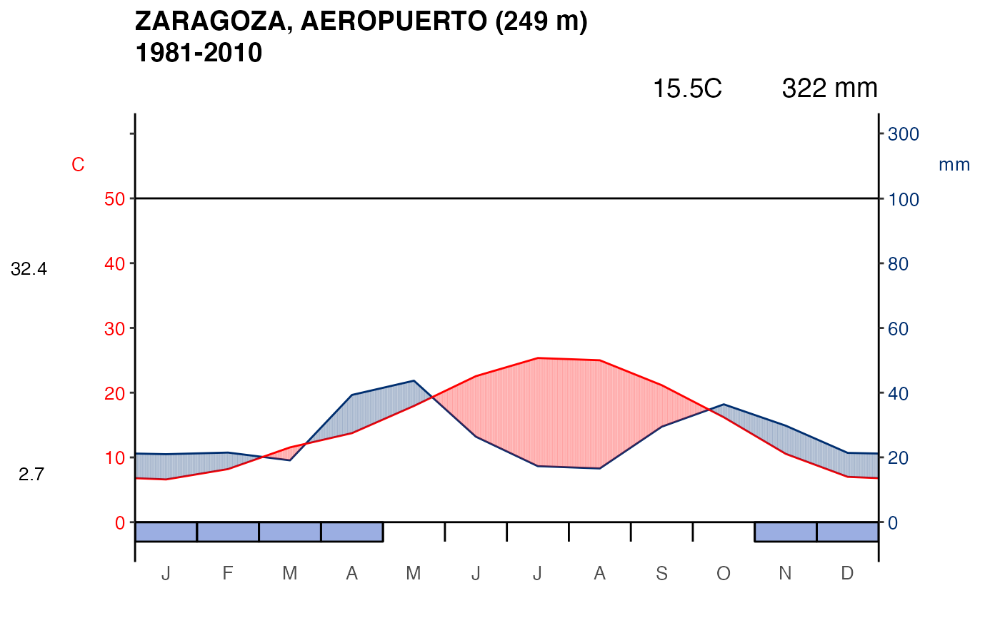

Walter & Lieth climatic diagram from normal climatology values
Source:R/climatogram.R
climatogram_normal.RdPlot of a Walter & Lieth climatic diagram from normal climatology data for a station. This climatogram are great for showing a summary of climate conditions for a place over a time period ((1981-2010).
climatogram_normal( station, labels = "en", verbose = FALSE, ggplot2 = TRUE, ... )
Arguments
| station | Character string as station identifier code
(see |
|---|---|
| labels | Character string as month labels for the X axis: "en" (english), "es" (spanish), "fr" (french), etc. |
| verbose | Logical TRUE/FALSE. Provides information about the flow of information between the client and server. |
| ggplot2 | TRUE/FALSE. On "TRUE" the function uses
|
| ... | Further arguments to
|
Value
a plot.
Note
The code is based on code from the CRAN package "climatol" by Jose A. Guijarro jguijarrop@aemet.es.
References
Walter, H. & Lieth, H (1960): Klimadiagramm Weltatlas. G. Fischer, Jena.
See also
Examples
# Run this example only if AEMET_API_KEY is set if (aemet_detect_api_key()) { climatogram_normal("9434") }
Site built with pkgdown 1.6.1.
Template by Bootstrapious . Ported to pkgdown by dieghernan.